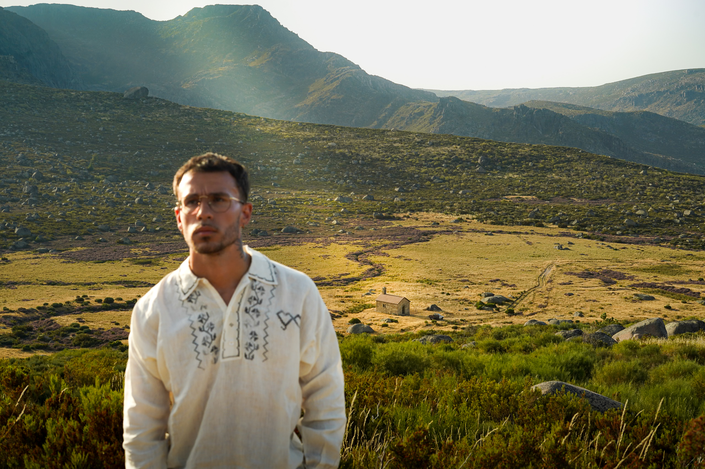
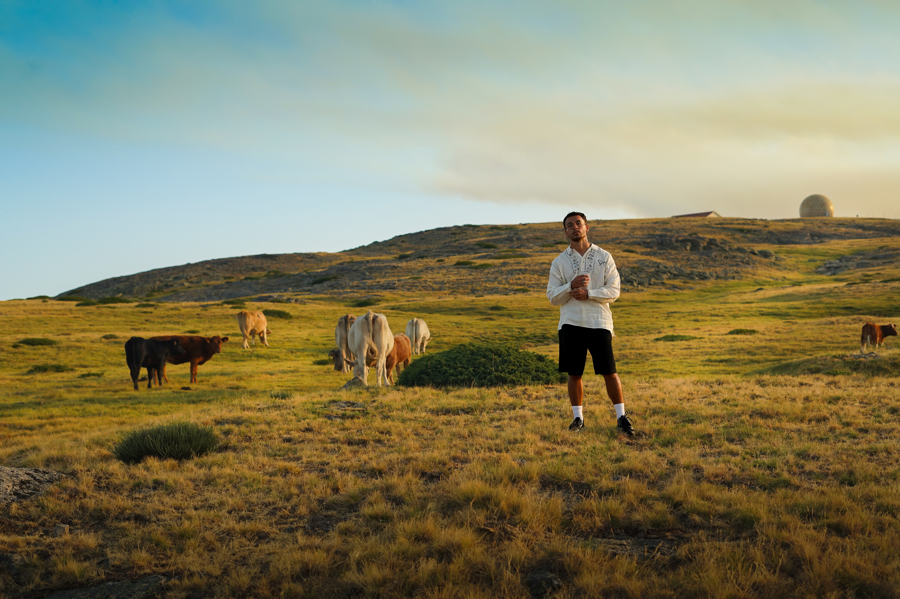
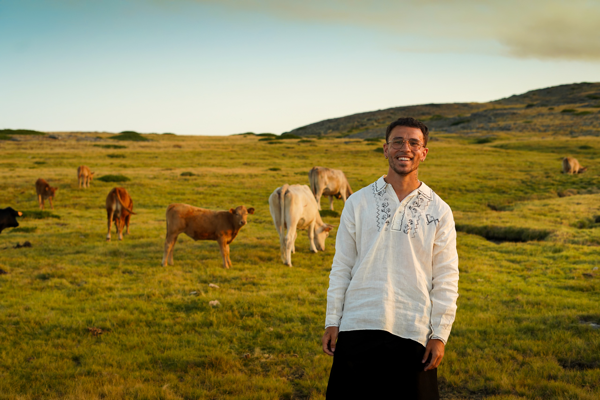
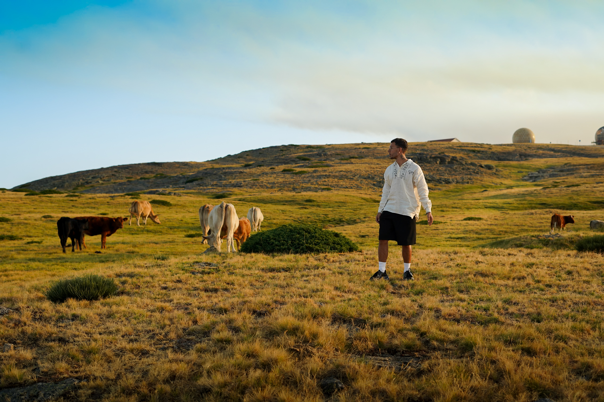
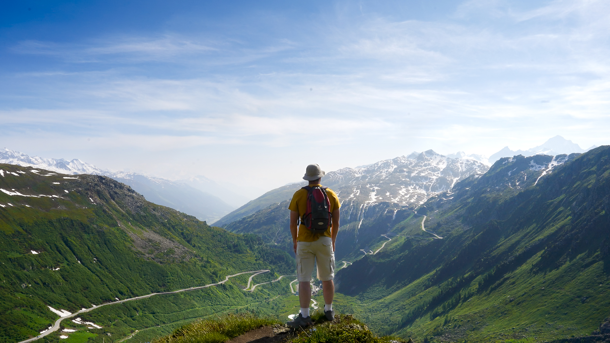
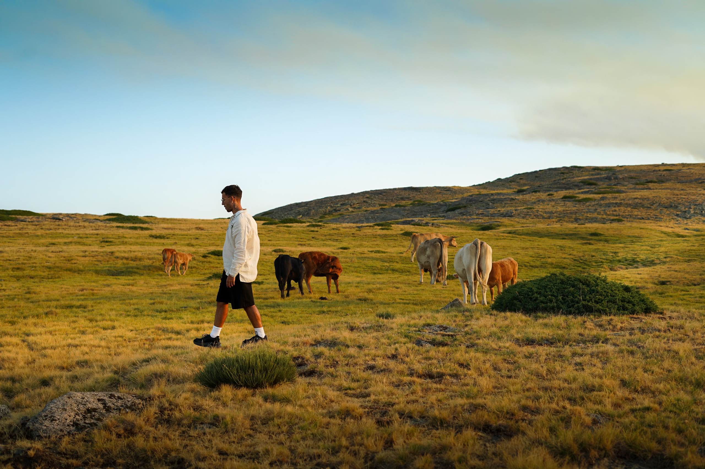

Vidéaste indépendant, caméra au poing depuis plus de 6 ans. J'ai commencé en filmant mes potes en skate avec un caméscope pourri — j'ai gardé le réflexe : être là où ça se passe, au moment où ça se passe.
Mon truc : capter le réel sans le lisser. Un clip doit transpirer, une pub doit accrocher en une seconde, un documentaire doit laisser une trace. Le reste, c'est de la décoration.
// sélection 2023 — 2026
le reste est dans le disque dur, demande-moi.




+ Nuit Blanche, pubs locales, 30 clips non listés…
demande la démo complète →
// photos prises entre deux plans
argentique & numérique
chaque tournage laisse des images en trop —
les voilà.
De la direction artistique au master final. Ton son mérite mieux qu'un plan fixe.
Des formats courts qui arrêtent le scroll. Pensés pour le web, le social et le grand écran.
Du terrain, du vrai. Portraits, métiers, territoires — je prends le temps qu'il faut.
Festivals, concerts, événements. L'énergie de la nuit, condensée en 2 minutes.
Tu as les rushes, j'ai le rythme. Montage nerveux, colorimétrie aux petits oignons.
Un clip, une pub, une idée floue à 3h du matin — envoie, on en fait quelque chose. Basé en France, dispo partout où il y a quelque chose à filmer.
hello@tomcarvalho.fr